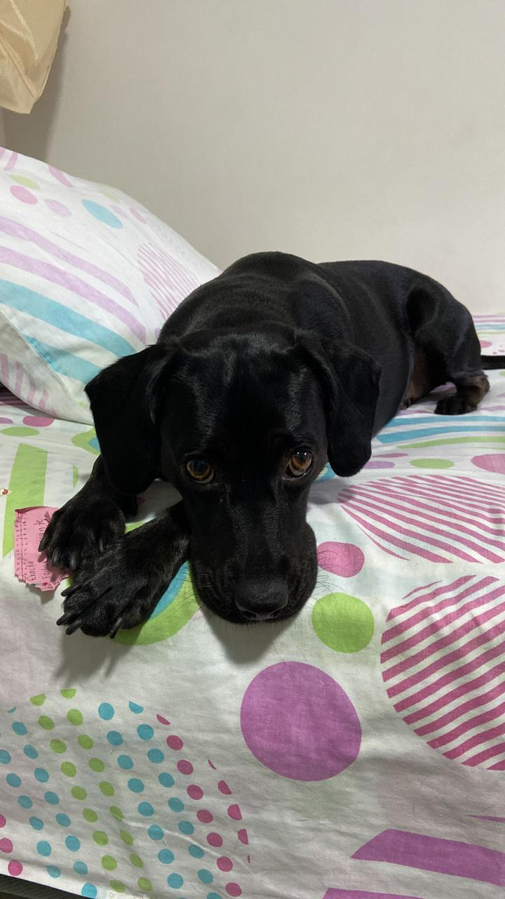

Mis Mascotas
← Volver al Portafolio
Galería de imágenes

Persona disfrutando de la lectura en un ambiente tranquilo.
Persona disfrutando de la lectura en un ambiente tranquilo.
Persona disfrutando de la lectura en un ambiente tranquilo.